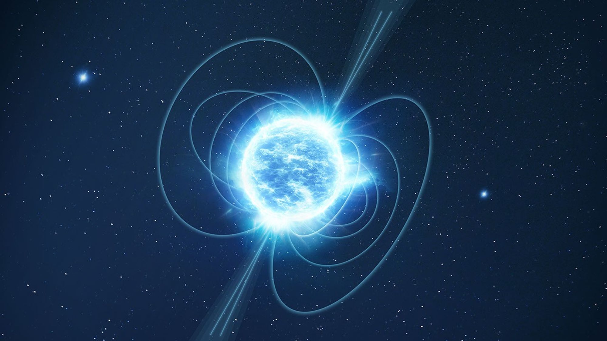

IMAGE: Illustration of Magnetar | IMAGE CREDIT: Illustration: ESA
Dusty's Log Entry:
- Type: neutron star with an extreme magnetic field
- Temperature: millions of K
- Mass: about 1 - 2 Suns
- Lifespan: 10,000 years
- What's Next: quiets down as the field fades
Magnetars are essentially neutron stars with an incredibly powerful magnetic field around it. This magnetic field is trillions of times stronger than Earth's and currently the strongest recorded in the universe. The field will shift and strain against the star's surface, this crack will cause a starquake and release a burst of X-rays and gamma rays. In 2004, a flare from a magnetar thousands of light-years away disturbed Earth's upper atmosphere.
Examples of Magentars include SGR 0501+4516 and SGR 0418+5729. SGR stands for Soft Gamma Repeater, with the numbers identifying their galactic coordinates.